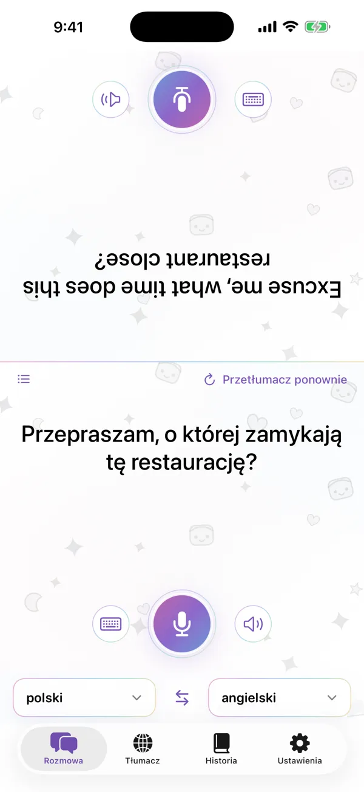

Rozmowa twarzą w twarz
Ekran dzieli się na dwie części, a połowa rozmówcy jest obrócona do góry nogami, więc możesz położyć telefon między wami. Mów lub pisz, a każdy czyta tłumaczenie w swoim języku.
- Rozpoznawanie mowy na urządzeniu
- Odtwarzanie każdej wypowiedzi
- Czytanie tłumaczeń na głos